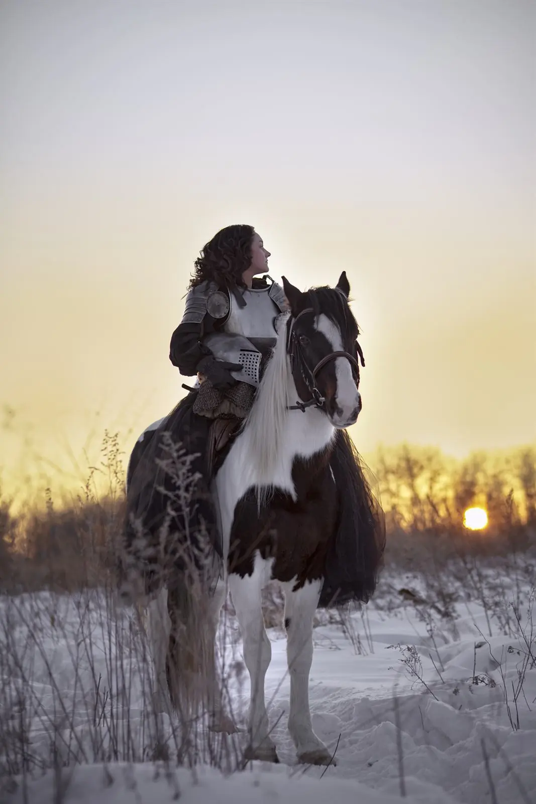

Находим сюжет
Обсуждаем историю, настроение и художественный образ.
Фотограф Анна Финк · Хабаровск
Здесь кадр начинается с идеи: света, движения, костюма или сюжета. Можно прийти с готовым образом либо обсудить настроение и вместе найти визуальную историю.

Портфолио
Каждая серия строится вокруг своего образа: от балета и свечей до зимней истории с лошадью.
Работа Анны вошла в топ-20% конкурса 35AWARDS «Движение: Танец» (2020). Посмотреть сертификат · Профиль на 35AWARDS
Как проходит съёмка
Обсуждаем историю, настроение и художественный образ.
В зависимости от замысла выбираем студию, помещение или уличную локацию и свет.
Во время съёмки я направляю движения и ищу кадры, которые передают историю.
Стоимость
Сюжет, художественный образ и работа со светом. Состав и детали конкретной съёмки уточняются в переписке.
Аренда студии или другой платной локации оплачивается отдельно. При желании отдельно можно заказать визажиста и стилиста по волосам. Готовые фотографии выдаю через 2–3 недели.
Частые вопросы
Да. Напиши, какое настроение тебе близко, и мы обсудим сюжет и образ.
Это зависит от идеи. Обсудим образ и детали до съёмки, чтобы подготовить только нужное.
Количество кадров для этого направления пока не указано на сайте. Уточни состав съёмки перед записью.
Место выбираем под идею: это может быть студия, другое помещение или открытая локация.
Срок выдачи готовых фотографий — 2–3 недели.
Аренда фотостудии или другой платной локации не входит в стоимость съёмки. При желании отдельно можно заказать визажиста и стилиста по волосам.
Бесплатно перенести съёмку можно, если предупредить не позднее чем за 24 часа.
Другие направления
Запись на съёмку
Напиши, какой формат тебе интересен. Мы обсудим настроение, место и детали съёмки в Хабаровске.